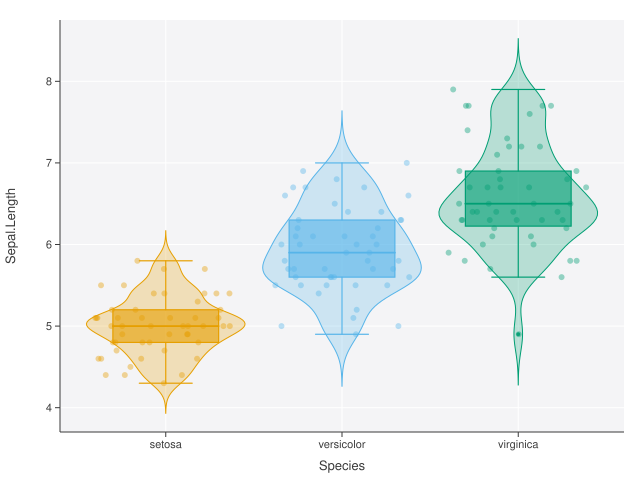
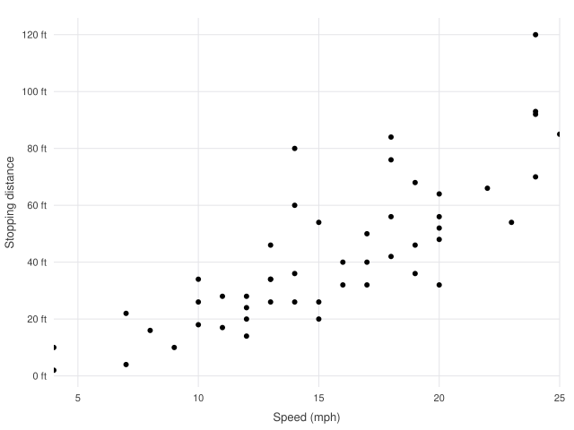
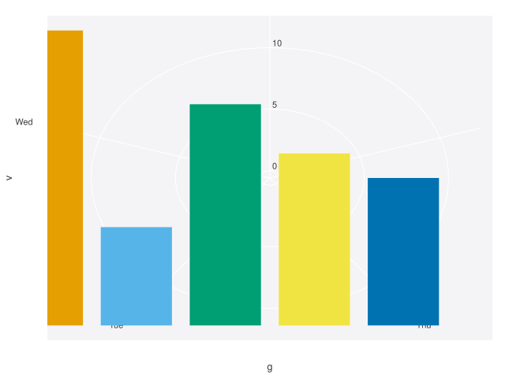
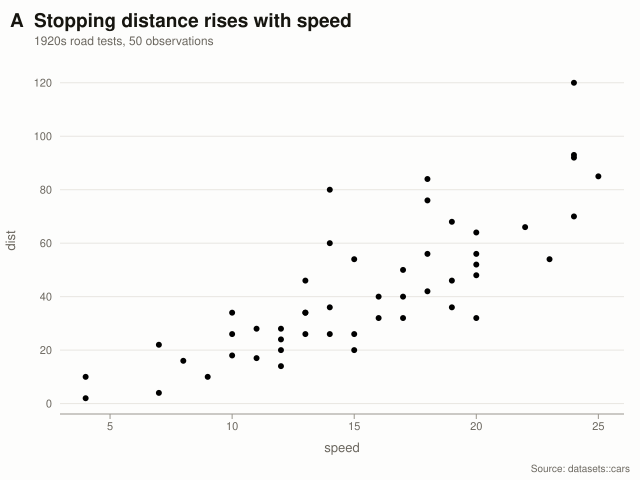
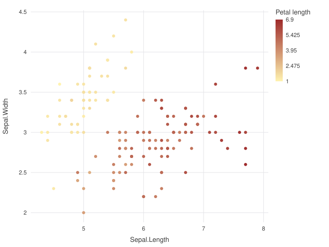

Guide
The grammar end to end: building a plot, controlling the axes, styling it, adding interactivity, and getting the numbers back out.
The grammar
A plot is data, an aesthetic mapping, and one or more layers. Scales, coordinates, facets and a theme are all optional — sensible defaults are chosen from the data.
ggplot3(cars, aes(speed, dist)) +
geom_point()aes() captures unevaluated expressions, so you refer to columns by name. The first two unnamed arguments are x and y. Adding a component with + returns a new plot — plots are immutable values, so a partial specification can be reused as a template.
base <- ggplot3(iris, aes(Sepal.Length, Sepal.Width))
base + geom_point() # scatter
base + geom_point() + geom_smooth() # scatter with a trend
# `base` itself is unchanged.Because + never mutates, you can build a plot conditionally: p <- p + if (annotate) geom_text() else NULL. Adding NULL is a no-op.
Layers, geoms and stats
Every layer pairs a geom (how values are drawn) with a stat (how raw data becomes those values). geom_point() uses stat_identity(); geom_histogram() bins first; geom_boxplot() computes Tukey’s five numbers. Layers draw in the order added, so put context underneath and detail on top.
ggplot3(iris, aes(Species, Sepal.Length, color = Species)) +
geom_violin(alpha = 0.25) + # distribution, underneath
geom_boxplot() + # summary
geom_jitter(alpha = 0.4) # raw observations, on top
A layer can override the plot’s data and mapping, which is how you annotate one plot with a second dataset:
means <- aggregate(Sepal.Length ~ Species, iris, mean)
ggplot3(iris, aes(Species, Sepal.Length)) +
geom_jitter(alpha = 0.3) +
geom_point(aes(Species, Sepal.Length), data = means,
color = "#C1462F", size = 6)Aesthetics and grouping
Supported aesthetics are x, y, color (colour also works), size, group, label, xend/yend, ymin/ymax, and the specialised time/status and truth/score pairs used by the survival and classifier geoms.
There is a difference between mapping and setting:
geom_point(aes(color = Species)) # mapped: colour varies by data
geom_point(color = "steelblue") # set: one literal colour
# A constant inside aes() that names a real colour is honoured
# literally rather than treated as a one-level category:
geom_point(aes(color = "blue")) # blue points, no legendGrouping decides what counts as one line, one polygon, one box. An explicit group wins; otherwise a discrete color mapping does the grouping; otherwise everything is one group. Map group when you want separate lines without separate colours:
aes(week, score, group = subject) # many grey lines
aes(week, score, group = subject, color = arm) # coloured by armScales and axes
Scales decide how data values become positions and colours. A positional scale is chosen automatically — continuous for numbers, discrete for character, factor or logical — and you override it to control the title, limits, tick positions, tick labels, padding, or transform.
ggplot3(cars, aes(speed, dist)) +
geom_point() +
scale_x_continuous(
name = "Speed (mph)",
breaks = c(5, 10, 15, 20, 25),
expand = 0 # no padding: axis hugs the data
) +
scale_y_continuous(
name = "Stopping distance",
labels = function(v) paste0(v, " ft")
)
Transforms live on the scale, so the whole pipeline — expansion, tick placement, mark positions — happens in transformed space while labels stay in the original units.
scale_x_log10() scale_y_log10() # decade ticks
scale_x_sqrt() scale_y_sqrt()
scale_x_reverse() scale_y_reverse() # e.g. rank axesDiscrete axes take explicit level orders, which is how you sort bars by size rather than alphabetically:
d <- d[order(-d$value), ]
ggplot3(d, aes(name, value)) + geom_col() +
scale_x_discrete(limits = d$name)limits sets the domain, not a crop: data outside the limits still goes through the stats and is clipped when drawn, so a mean or a fit is unaffected by the window you choose.
Position adjustments
Bars and columns take a position:
geom_col(position = "stack") # default: totals
geom_col(position = "dodge") # side by side: compare groups
geom_col(position = "fill") # proportions within each x
geom_col(position = "identity") # overplotted from a zero baseline
Adjustments are applied in data space, before the axis is trained, so a stacked chart’s axis covers the stack totals rather than the tallest single bar.
Facets
facet_wrap() splits the data and draws one panel per subset. Panels share axes by default, which is what makes them comparable; use scales = "free" when each panel’s own range matters more than cross-panel comparison.
facet_wrap(Species) # shared axes
facet_wrap(Species, ncol = 2) # force the grid shape
facet_wrap(Species, scales = "free") # per-panel axes
facet_wrap(c(am, cyl)) # two variables
facet_grid(am, cyl) # rows by columns
Inner panels drop redundant tick labels automatically. A layer whose data lacks the faceting variable — a reference line, say — is repeated unchanged in every panel.
Coordinate systems
coord_flip() swaps the axes, which is the usual fix for long category labels:
ggplot3(d, aes(category, value)) + geom_col() + coord_flip()coord_polar() bends the panel into a circle: the theta axis becomes the angle and the other becomes the radius. Any cartesian geom follows.
coord_polar() # x -> angle
coord_polar(theta = "y") # y -> angle
coord_polar(inner = 0.3) # donut hole
coord_polar(direction = -1) # counter-clockwise
Titles and labels
labs() sets the whole title block; each argument is optional and repeated calls merge, so you can build it up.
labs(
title = "Stopping distance rises with speed",
subtitle = "1920s road tests, 50 observations",
caption = "Source: datasets::cars",
tag = "A", # panel tag for multi-figure layouts
x = "Speed (mph)", y = "Distance (ft)",
color = "Vehicle class" # legend title
)
ggtitle("Main", subtitle = "Sub") # shorthands
xlab("Speed"); ylab("Distance")
Pass y = NULL to drop an axis title that the category labels already make obvious.
Themes
Six presets ship with the package; theme() overrides individual settings on top of any of them.
theme_ggplot3() # default: tinted panel, white grid
theme_minimal() # no panel fill, light grid, no axis lines
theme_classic() # white panel, black axes, no grid, serif
theme_modern() # editorial: big title, horizontal rules only
theme_dark() # dark background and palette
theme_void() # no chrome at all
theme(base = theme_minimal(), grid_major_x = FALSE,
legend_position = "bottom", plot_title_size = 20)See the Themes page for all 35 settings and their defaults.
Legends
A legend appears automatically when color is mapped: a swatch key for discrete data, a gradient bar for continuous. Control it with the theme and with palette scales.
theme(legend_position = "bottom") # or "right" (default), "none"
labs(color = "Species") # legend title
scale_color_manual(c("#2B6BE0", "#E05A2B", "#12A594"))
scale_color_gradient(low = "#FFF3B0", high = "#9E2A2B")
Interactivity
Plots are static first. + interact() switches the default render target to a self-contained HTML page — the same geometry, a different serializer.
p <- ggplot3(iris, aes(Sepal.Length, Sepal.Width, color = Species)) +
geom_point()
render(p) # SVG
render(p + interact()) # tooltips + zoom + brush
render(p + interact(tooltip = c("Species", "Petal.Length")))
render(p + interact(zoom = FALSE, brush = FALSE)) # tooltip only
render(p, file = "plot.svg")
render(p + interact(), file = "plot.html")Hover shows the mapped values (or the columns you name), the wheel zooms about the cursor, dragging brushes a region, and double-click resets. In a faceted plot each panel zooms independently. The page is one file with no external assets, so it works from a file:// URL and can be emailed as-is.
Animation
animate() reruns the pipeline once per level of a transition variable. Scales are trained on the full data first, so the axes hold still while frames play — the thing that makes an animation readable rather than dizzying.
ggplot3(panel_data, aes(gdp, life_expectancy, color = continent)) +
geom_point(size = 4) +
scale_x_log10() +
animate(year, duration = 700, easing = "cubic-in-out")The interactive page gains a play/pause button and a frame scrubber. render(p, target = "static") still produces an SVG of all the data at once, so animation never blocks an export.
Getting the data back
plot_data() returns exactly what the plot draws. For a scatter that is the input; for a histogram it is the bins actually drawn; for a box plot the quartiles and whisker ends.
p <- ggplot3(cars, aes(speed)) + geom_histogram(bins = 5)
plot_data(p)
#> x y ymin ymax xmin xmax
#> 1 6.625 6 0 6 4.00 9.25
#> 2 11.875 17 0 17 9.25 14.50
write_plot_data(p, "figure-2-data.csv")With several layers you get one table per layer; with facets, a panel column. plot_data(p, layer = 2) and plot_data(p, panel = 1) select; plot_data(p, panel = "list") returns one table per panel.
This is the honest record of a figure: it reflects every stat, position adjustment and facet split, and drops internal scratch columns — so what you publish beside the chart is what the chart shows.
Output and sizing
Size is set at construction or with plot_size(), and render() writes to a file or returns a string.
ggplot3(d, aes(x, y), width = 900, height = 600)
p + plot_size(900, 600)
svg <- render(p) # a character string
render(p, file = "plot.svg") # write SVG
render(p + interact(), file = "plot.html")
cat(render(p)) # inspect the sourcePrinting a plot at the console shows a summary and opens the image in the RStudio viewer (or your browser). Printing a rendered document shows a short summary rather than thousands of characters of markup.
Extending ggplot3
A geom is an S7 subclass plus one build_marks() method returning drawing primitives in normalized panel coordinates. Because both renderers consume those primitives, a new geom needs no renderer changes at all.
GeomCross <- S7::new_class("GeomCross", parent = Geom,
constructor = function() {
S7::new_object(Geom(name = "cross",
default_params = list(size = 5, alpha = 1)))
}
)
S7::method(build_marks, GeomCross) <- function(geom, scaled) {
unlist(lapply(seq_along(scaled$x), function(i) {
r <- scaled$size[[i]] / 400
list(
ggplot3:::mk_line(c(scaled$x[[i]] - r, scaled$x[[i]] + r),
rep(scaled$y[[i]], 2), scaled$color[[i]]),
ggplot3:::mk_line(rep(scaled$x[[i]], 2),
c(scaled$y[[i]] - r, scaled$y[[i]] + r),
scaled$color[[i]])
)
}), recursive = FALSE)
}
geom_cross <- function(mapping = NULL, data = NULL, ...) {
ggplot3:::layer_new(GeomCross(), stat_identity(), mapping, data,
list(...))
}The five primitives are mk_circle(), mk_line(), mk_rect(), mk_polygon() and mk_text(). A statistical transformation is a Stat subclass with a compute_stat() method. The same seam is what every built-in geom uses, so there is no private path a package geom can take that yours cannot.
Troubleshooting
evaluated to a function, not a data column | The name in aes() is not a column, and R found a function of that name instead — class, dist and rank are common traps. The error lists the columns that do exist. |
requires the aesthetic(s) | A geom needs mappings you have not supplied, e.g. geom_sankey() needs x, xend and y. |
a log10 scale requires strictly positive values | Zero or negative values cannot go on a log axis; filter them or use scale_x_sqrt(). |
must be numeric for a continuous scale | A character column reached a scale you declared continuous; either let the scale be chosen automatically or use scale_x_discrete(). |
| Legend missing | Legends come from a mapped color. geom_point(color = "red") sets a constant and produces none; check legend_position is not "none". |
| Console fills with markup | You are printing a rendered document from an older session. Restart R; render() output prints as a one-line summary. |